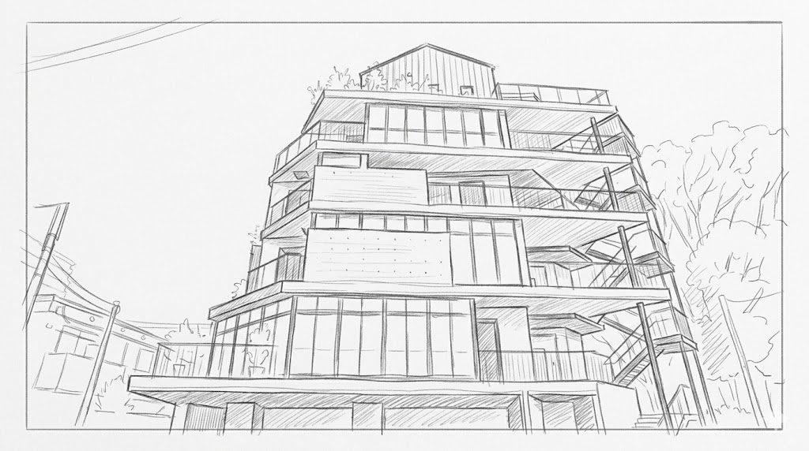

Storyboard — 字コンテ v2
へんしんバイク GWイベント
ブランドムービー 絵コンテ
約2分 ｜ ドキュメンタリー × ブランド ｜ 全7シーン
撮影: 4/19〜5/3（3〜4日間）｜ Taka担当
字コンテ — ビジュアル後入れ
Draft 2026.04.08
Confidential
※ 尺は目安 — 撮影素材に応じて調整
0:00
0:15
0:35
1:00
1:20
1:40
1:55
2:05
1. OPENING
2. 壁画の始まり
3. スザンヌの声
4. ピジョンWS
5. 会場の熱気
6. 壁画の前で
7. CLOSING
Scene 01
OPENING — 白い壁
0:00 → 0:15（15秒）
まだ何も描かれていない白い壁。静寂。空間のディテール。スザンヌが現れ、最初のひと筆を入れる。タイトル表示。「何かが始まる」予感。

駒沢ショールーム外観
朝の光。建物全体 or 入口。場所の紹介
三脚 / 自然光
Wide
空間のディテール
ドアノブ、看板、光の差し込み、床の質感
手持ち / スローで数カット
Close-up
白い壁のフルショット
まだ何も描かれていない状態。静かな画。この壁がこれから変わる
三脚 / 正面から
Wide
壁の白い表面
テクスチャーが見えるくらい寄る。マクロ的に
手持ち or 三脚 / 浅いDOF
Close-up
タイトルテロップ
壁のショットの上にタイトルをオーバーレイ。「へんしんバイク × スザンヌ」
編集時に合成
Title
スザンヌが壁に向き合う
後ろ姿 or 横顔。壁を見つめる。筆を手に取る
手持ち / ゆっくり近づく
Medium
スザンヌの手 — 筆が壁に触れる
筆を握る手元 → 壁に最初の色がのる。白い壁が変わり始める瞬間
手持ち / 浅いDOF / スロー推奨
Close-up
🎵
Audio
環境音（静寂・風・鳥）→ 音楽がゆっくり立ち上がる
💡
Note
撮影日: 4/19（Day 1）。朝の光が入る時間帯がベスト
Scene 02
壁画が育っていく
0:15 → 0:35（20秒）
日が経つごとに壁画に色が増えていく。タイムラプスと手持ちの寄りカットで、制作のプロセスを見せる。スザンヌのダイナミックな作業風景。
壁画の進行（固定カメラ）
4/19〜5/3の数日分を凝縮。白い壁 → 色が広がる → 完成に近づく
固定カメラ / 渡辺さん日常管理
Timelapse
スザンヌの手元 — 筆さばき
筆が壁に色をのせていく。大胆なストローク。鮮やかなピンク、ブルー、グリーンが広がる
手持ち / 近距離で追う
Close-up
スザンヌの横顔・表情
集中した真剣な顔、ふと笑顔になる瞬間。ピンクの眼鏡、タトゥー、オーバーオール — キャラクターが伝わるカット
手持ち / 横から / 浅いDOF
Medium
画材・道具のカット
カラフルなペンキ缶が並ぶ、何本もの筆、絵の具がついた手。アトリエ感
手持ち / 浅いDOF / 数カット
Close-up
壁全体 — 日ごとの変化
撮影日ごとに同じアングルから壁全体を撮る。進行がわかるように
三脚 / 固定アングル（タイムラプスと同ポジ推奨）
Wide
スザンヌ越しの壁画 / 一歩引いて全体を眺める
肩越しに広がるアート。ふと手を止めて全体を確認する瞬間。アーティストの視点
手持ち / スザンヌの背後〜斜め後ろ
Medium
🎵
Audio
音楽がビルドアップ。テンポが上がり始める。制作音（筆音、ペンキ缶）をミックス
💡
Note
手持ちの寄りカットは4/19, 4/26の撮影日に集中的に撮る
Scene 03
スザンヌの声
0:35 → 1:00（25秒）
インタビューを軸にしたシーン。スザンヌのこだわり、アートへの想い、へんしんバイクとの共鳴ポイントを語ってもらう。インタビュー音声の上にB-Roll（制作映像）を重ねる構成。
スザンヌ インタビュー — バストショット
完成途中の壁画を背景に。自然光。リラックスした雰囲気で
三脚 / ピンマイク / 浅いDOF / 壁画ボケ背景
Interview
スザンヌ インタビュー — 寄り
表情のクローズアップ。感情が見える距離感
三脚 or 手持ち / 別アングル
Interview
手元のクローズアップ（音声に重ねる）
インタビュー音声の上に制作映像を重ねる。筆を持つ手、ペンキ缶の色彩、壁に色がのる瞬間
手持ち / インタビューとは別タイミングで撮影可
Close-up
壁画のディテール
完成に近づく壁画の部分的なクローズアップ。色彩、筆跡、テクスチャー
手持ち / ゆっくりパン or スライド
Close-up
スザンヌの全身 — 制作中の姿
没頭して描いている姿。インタビュー音声と映像のコントラスト
手持ち / 自然な距離感
Medium
壁画を見つめる子どもの顔
口を開けて見ている子ども。驚きの表情。スザンヌの言葉と子どもの反応が重なる
手持ち / 望遠気味で自然に
Close-up
スザンヌが笑顔で語る瞬間
「変身」について語る場面。感情のピーク。このカットが全体のキーになる可能性
三脚 / ピンマイク
Interview
スザンヌと壁画の全景
引きで「人とアート」の関係を見せる。シーンの締め
三脚 / ワイド
Wide
🎵
Audio
インタビュー音声がメイン。BGMは控えめに下げる。制作音を少し残す
💡
Note
インタビューは英語で収録 → 日本語字幕を挿入
Scene 04
ピジョン — 親子の手
1:00 → 1:25（25秒）
ピジョンの指絵の具ワークショップ。子どもの手、親の手、色が混ざっていく。「手で触れて変わる」体験はへんしんバイクの「変身」と重なる。
WSスペースの全景
セッティングされた机、絵の具、紙。これから始まる空気感
三脚 or 手持ち / ワイド
Wide
子どもの手が絵の具に触れる瞬間
初めて触る躊躇 → 触れた瞬間の表情変化。決定的カット
手持ち / マクロ寄り / スロー推奨
Close-up
親の手が子どもの手をガイド
大きな手と小さな手が重なる。色がついた指。親子の絆
手持ち / 手元にフォーカス
Close-up
親子の横顔 — 並んで作業
同じ目線の高さで。二人の表情が見える構図
手持ち / 横位置 / 浅いDOF
Medium
指で描かれていく模様
紙の上に色が広がる。指の跡、色の混ざり。プロセスの美しさ
手持ち / 真上から or 斜めから
Close-up
子どもの表情 — 集中・笑顔・驚き
没頭している顔、できた！の笑顔、色が混ざった驚き
手持ち / 望遠気味で自然に
Close-up
完成した作品を見せる子ども
得意げに作品を持ち上げる or 親に見せる。達成感
手持ち / 子どもの目線に合わせて低く
Medium
複数の親子が並ぶ風景
ワークショップ全体の賑わい。様々な家族が同時に制作している
手持ち / 引きで全体を
Wide
🎵
Audio
音楽が柔らかく。笑い声・会話を自然音としてミックス
💡
Note
撮影日: 4/28 or 29。1時間セッション × 複数回あるので2回目以降でベストカット狙い
Scene 05
会場に広がる色と笑顔
1:25 → 1:40（15秒）
モンタージュ。テンポよくカットを繋いで、イベント全体の熱気を凝縮する。ミレットWSはここでサブカットとして入れる。エネルギーのピーク。
会場全体の俯瞰
高い位置から見下ろす。人の動き、色彩、活気が一目でわかる
脚立 or 2階から / 広角
Wide
走り回る子どもを追う
動きのあるカット。子どもの目線の低さで追いかける
手持ち / ジンバル / 低い位置で
Tracking
色のついた手のアップ
絵の具で染まった子どもの手。カラフルさが伝わるように
手持ち / マクロ
Close-up
ミレットWS — 粘土制作
親子が粘土キャラクターを作っている様子。サブカットとして1-2カット
手持ち / 自然な距離感
Medium
様々な家族の笑顔モンタージュ
テンポよく切り替え。多様な家族。笑っている顔を連続で
手持ち / 望遠で自然に拾う
Close-up
壁画 × 会場の活気を1フレームに
背景にスザンヌの壁画、手前にイベントの賑わい。空間全体の色彩
手持ち / 広角 / ゆっくりパン
Wide
🎵
Audio
音楽テンポアップ。賑やかな環境音をミックス。エネルギーのピーク
💡
Note
ミレットWSは4/26、他のカットは5/3がメイン。複数日の素材を混ぜてモンタージュ
Scene 06
壁画の前で
1:40 → 1:55（15秒）
5/3公開イベント。仕上がりに近づいた壁画の前に人が集まっていく。色彩に包まれた空間で、家族が過ごしている。OPENINGの白い壁との対比。
壁画のフルショット
OPENINGの白い壁と同アングル。色彩で埋め尽くされた壁。Before/Afterの対比
三脚 / OPENINGと同ポジション
Wide
壁画の前のスザンヌ
自分の作品の前に立つスザンヌ。笑顔。誇らしさ
手持ち / 自然な距離感
Medium
壁画を見る人たちのリアクション
子どもの歓声、親の笑顔、壁画を見上げる表情。自然な反応を拾う
手持ち / 望遠で自然に
Close-up
壁画の前に家族が集まる・記念撮影
色彩豊かな壁画をバックに笑顔の家族。自然に集まっていく様子
手持ち / 少し引いて
Wide
壁画を見上げる子ども
壁画を指差したり、親に「あれ見て！」と話しかける。純粋な反応
手持ち / 望遠 / 子どもの目線
Close-up
🎵
Audio
音楽が感動的なクライマックスへ。歓声・賑わいを自然音として残す
💡
Note
撮影日: 5/3。壁画の仕上がり具合はタイミング次第。完成前でもOK — 色彩で埋まった壁と人が映っていれば成立する
Scene 07
CLOSING — 月に願いを
1:55 → 2:05（10秒）
余韻。子どもたちの未来を想うへんしんバイクの想いと「月に願いを」プロジェクトをコピーで軽く繋ぐ。ブランドロゴで締める。
子どもの笑顔 — 余韻カット
壁画やWSで見た幸せな瞬間のベストカット。映像のラストの余韻
手持ち / スロー / 望遠
Close-up
月プロジェクト関連カット（5/3に撮影）
集合写真のシーン、メッセージボード、チェキ写真など。軽く1-2カット
手持ち / 自然に拾う
Close-up
コピーテロップ
子どもの未来 × HBの想いを繋ぐ一文。月プロジェクトを匂わせる
編集時にデザイン
Title
ブランドロゴ
へんしんバイクロゴ。余韻を残してフェードアウト
編集時にデザイン
Title
🎵
Audio
音楽がフェードアウト。最後は静かに余韻を残す
💡
Note
コピーの内容は別途検討。コンセプトが固まったら反映
Reference
撮影日別カットリスト
Day 1 — 4/19
壁画開始 + カメラ設置
ショールーム外観・空間ディテール
白い壁のフルショット（BEFORE）
壁の白い表面テクスチャー
スザンヌ登場 → 壁に向き合う → 筆が壁に触れる
手元クローズアップ各種
固定カメラ設置
画材（ペンキ缶・筆）のディテールカット
Day 2 — 4/26
壁画中盤 + ミレットWS
壁画フルショット（中盤の進行記録）
スザンヌの手持ち寄りカット各種
スザンヌ横顔・集中表情
スザンヌ越しの壁画
スザンヌ インタビュー収録
ミレットWS（粘土・1-2カット）
壁画を見る子どもの反応
壁画ディテール（色彩・テクスチャー）
Day 3 — 4/28 or 29
ピジョンWS
WSスペース全景
子どもの手が絵の具に触れる瞬間
親子の手が重なるカット
横顔（親子並び）
指で描かれる模様・ディテール
子どもの表情リアクション
作品を見せる子ども
WS全体の賑わい（引き）
Day 3 or 4 — 5/3
公開イベント本番
壁画のフルショット（AFTER・OPENINGと同ポジ）
壁画の前のスザンヌ
壁画を見る人たちのリアクション
壁画前の家族記念撮影
会場全体の俯瞰・賑わい
走り回る子ども（トラッキング）
月プロジェクト関連カット
子どもの笑顔（CLOSINGの余韻用）
💡
前後の対比
白い壁（4/19）→ 完成した壁画（5/3）を同アングルで撮る。映像の構造的な柱になる
💡
スロー推奨カット
最初のひと筆 / 子どもの手が絵の具に触れる瞬間 / 笑顔リアクション